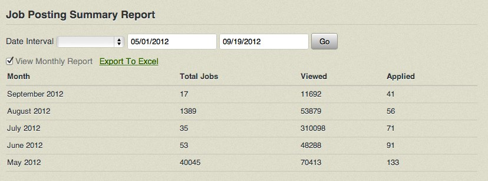
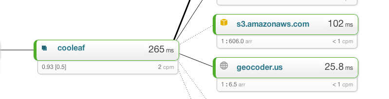

Performance sucks!
Make it better.
by Michael Guterl and Josh OwensMichael Guterl
- Twitter & Github - @mguterl

Josh Owens
- Twitter - @joshowens
- Github - queso
Optimizing Mysql
- Reduce number of queries per action
- Add indexes where appropriate
- Only select the columns you're using
We're off to see the wizard!
Episode Load (0.4ms) SELECT `episodes`.* FROM `episodes` WHERE `episodes`.`slug` = 'test' LIMIT 1
Episode Load (1.7ms) SELECT `episodes`.* FROM `episodes` WHERE (number <> 2) ORDER BY number DESC LIMIT 1
Lucy, splain yourself!
EXPLAIN SELECT `episodes`.* FROM `episodes` WHERE `episodes`.`slug` = 'test' LIMIT 1;
+----+-------------+----------+-------+------------------------+------------------------+---------+-------+------+-------+
| id | select_type | table | type | possible_keys | key | key_len | ref | rows | Extra |
+----+-------------+----------+-------+------------------------+------------------------+---------+-------+------+-------+
| 1 | SIMPLE | episodes | const | index_episodes_on_slug | index_episodes_on_slug | 768 | const | 1 | |
+----+-------------+----------+-------+------------------------+------------------------+---------+-------+------+-------+
EXPLAIN SELECT `episodes`.* FROM `episodes` WHERE (number <> 2) ORDER BY number DESC LIMIT 1;
+----+-------------+----------+-------+--------------------------+--------------------------+---------+------+------+-------------+
| id | select_type | table | type | possible_keys | key | key_len | ref | rows | Extra |
+----+-------------+----------+-------+--------------------------+--------------------------+---------+------+------+-------------+
| 1 | SIMPLE | episodes | range | index_episodes_on_number | index_episodes_on_number | 5 | NULL | 3 | Using where |
+----+-------------+----------+-------+--------------------------+--------------------------+---------+------+------+-------------+
Using the include, Luke.
SELECT `jobs`.* FROM `jobs` WHERE `jobs`.`id` = ?
SELECT `jobs`.* FROM `jobs` WHERE `jobs`.`id` = ?
SELECT `jobs`.* FROM `jobs` WHERE `jobs`.`id` = ?
vs.
SELECT `jobs`.* FROM `jobs` WHERE `jobs`.`id` IN (?, ?, ?, ?, ?, ?, ?, ?, ?, ?)
We shaved off 75ms or 12%
Summary Tables

id int(11)
organization_id int(11)
month int(11)
year int(11)
job_id int(11)
view_count int(11)
application_count int(11)
date date
title varchar(255)
internal_id varchar(255)
posted_at datetime
expires_at datetime
Caching
- Traditional Rails Caching
- Non-Traditional
Page Caching
class HomeController < ApplicationController
caches_page :index
def index
# Content that does not need to hit the Rails stack.
end
end
Action Caching
class HomeController < ApplicationController
before_filter :login_required
caches_action :show
def show
# Content that needs to go through the Rails stack.
end
end
Fragment Caching
<% cache object.cache_key -%>
<%= expensive_call_to_generate_some_html %>
<% end -%>
Caching external calls
Fake it, til ya make it
- Use ajax in interesting ways to make the site zippy
Cons of Caching
- Cache Invalidation
- Cold Cache
Extra Tools
- https://github.com/ruckus/active-record-query-trace
- https://github.com/flyerhzm/bullet